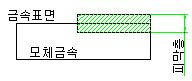

화성처리
|
1. 개 요 |
금속표면에 불용해성의 금속인산염으로 된 피막을 생성시켜 금속의 부식을 방지하거나 미관을 주어 제품의 가치를 높이는 처리 |
||||||||||||||||||||||||||||||||||||
|
2. 특 징 |
- 내식, 내열, 내알카리성 좋음(30㎛) - 처리액 조성 단순, 용이 - 소성변형 받는 소재 ⇒ Sand Blast (ex 주물) - 처리온도 높고 시간 오래걸림(질산염 첨가로 시간단축) |
||||||||||||||||||||||||||||||||||||
|
3. 처리시 주의사항 |
1) 압착 압연등 소성가공 받으면 처리 어려움  2) Ni 5%Cr 10% 이상 함유강(특수강) 처리불가 3) Sand Blast 처리면은 인산염처리 잘됨. |
||||||||||||||||||||||||||||||||||||
|
4. 참 고 |
※ 화성처리종류
<비고> ① 인산염 아연계 처리는 화성처리 中 내식성은 가장 좋으나, 처리불량으로 빛깔이 엷어져 외관을 해칠 우려가 많다. ※ 금속착색 (일본명 : 흑연착색) - 소재를 조성된 화합물속에 넣어 소재표면 산화시켜 Fe3O4(사산철) 흑색산화막 생성 · 소재경도와 동일(3㎛ 경우) 소재금속 밀착성 양호 · 설비간단 · 화합물 온도 150℃ 넘으면 적갈색 변색 |
||||||||||||||||||||||||||||||||||||
|
5. 가 격 |
450원/㎏ |